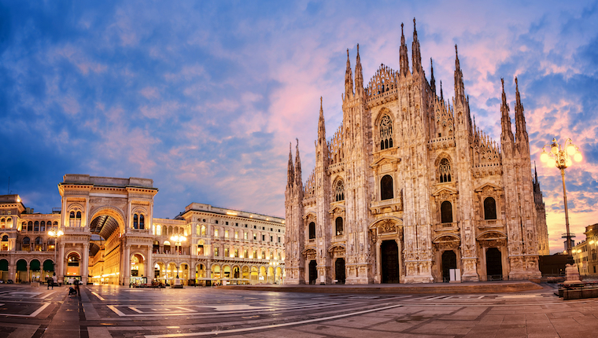

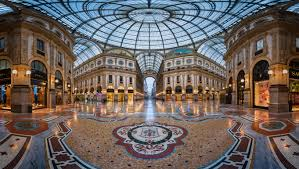
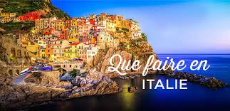
Si vous adorez l'Italie pour ses magnifiques monuments historique et sa nourriture typique. Alors ce circuit est fait pour vous!
Milan est la capitale de la mode et du design mais offre aussi de nombreux bâtiments historiques à visiter ! Mais voici les choses incontournables à voir si vous aller à Milan !
Vous avez une petites faim ? Passez par la piazza del Duomo en face de la magnifique Cathédrale de la Nativité-de-la-Sainte-Vierge, un régal pour vos yeux et votre estomac !
Allez passez votre après-midi au sein de la pinacothèque « Brera » avec sa riches collections de peinture de maitres italiens comme Raphael ou encore Bellini.
Pour finir votre journée en beauté, allez remplir votre estomac a Cantine Milano le restaurant typique de milan et allez dormir a l’hôtel NYX pour vous reposer de cette fabuleuse journée. Buona notte!


La première chose qui nous vient à l’esprit lorsque l’on pense à Pise c’est la fameuse tour penchée !
Pour bien commencer votre journée, allez visiter la Tour de Pise et n’oubliez pas votre photo!
Allez manger sur le pouce à Borgo Stretto et ramenez quelques souvenirs pour vos proches ! Buon appetito!
Et finissez votre journée en vous recueillant dans la cathédrale Notre-Dame de l’Assomption et le cimetière Camposanto Monumentale.
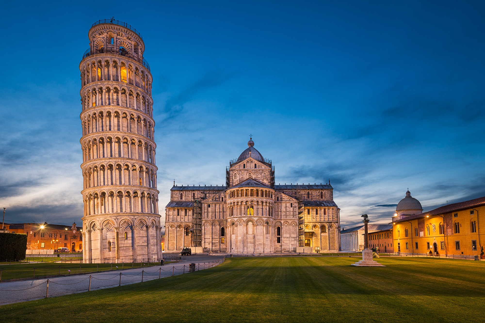
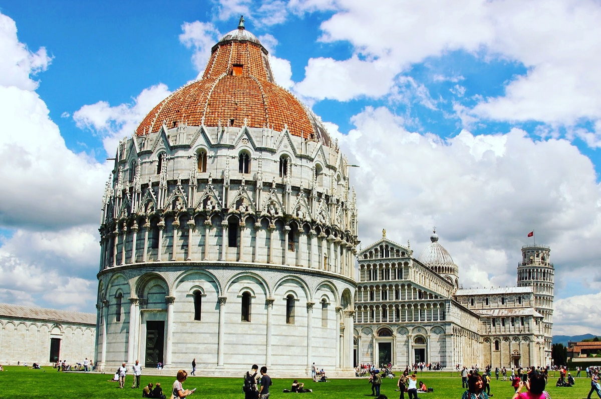
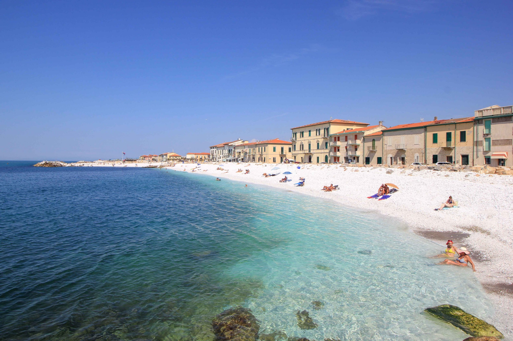
Florence est la plus belle ville de Toscane avec ses nombreux musées et ses palais contenant l’art de la renaissance. Et oui c’est la ville la plus visitée de l’Italie ! Alors ferez-vous partis des touristes qui ferons une escale à Florence cette année ?
Pour bien vous réveiller, commencez votre journée au Cupola del Brunelleschi et montez ses 400 marches! Mais vous serez récompensé par la magnifique vue sur Florence à 360 degrés !
Continuez à regaler vos yeux au Duomo et mangez une délicieuse pizza !
Lors du coucher de soleil, allez visiter la basilica San Miniato al Monte.
Finissez votre escale en allant manger au Ganza-Mai Abbastanza et si vous voulez dormir sur place, allez dormir dans le luxueux hotel B&B Kingsman !

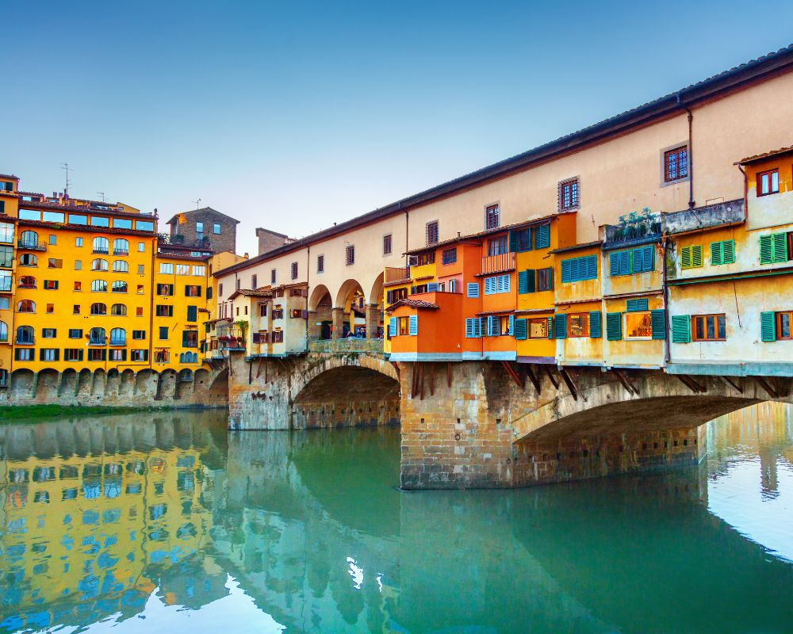
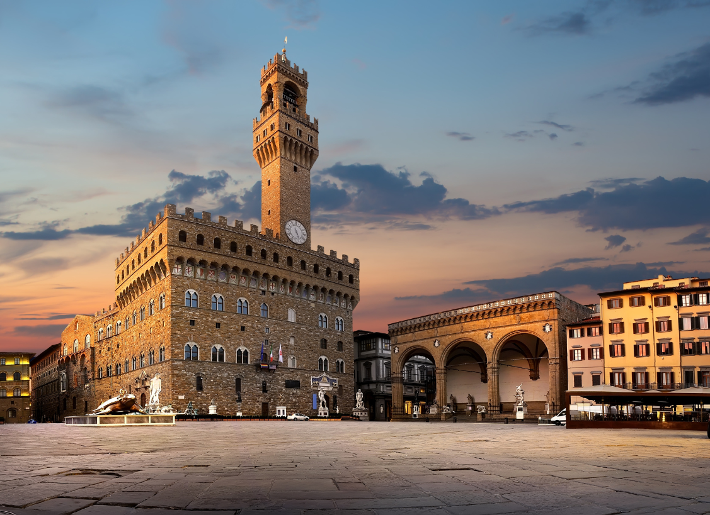
C’est l’endroit parfait pour un week-end en amoureux ! Avec ses balades sur les canaux de Venise, nous ne pouvons pas faire plus romantique ! Et petit conseil de notre part venez en février pour assister au carnaval de Venise !
Vous n’avez pas d’amoureux(se) ou vous avez peur de l’eau ! C’est pas grave voici notre programme !
Allez visiter la magnifique place Saint Marc ou les iles de Murano avec ses maisons typiques toutes colorées !
Finissez votre magnifique journée en allant manger au Skyline Rooftop Bar et séjournez à l’hôtel Serenissima !
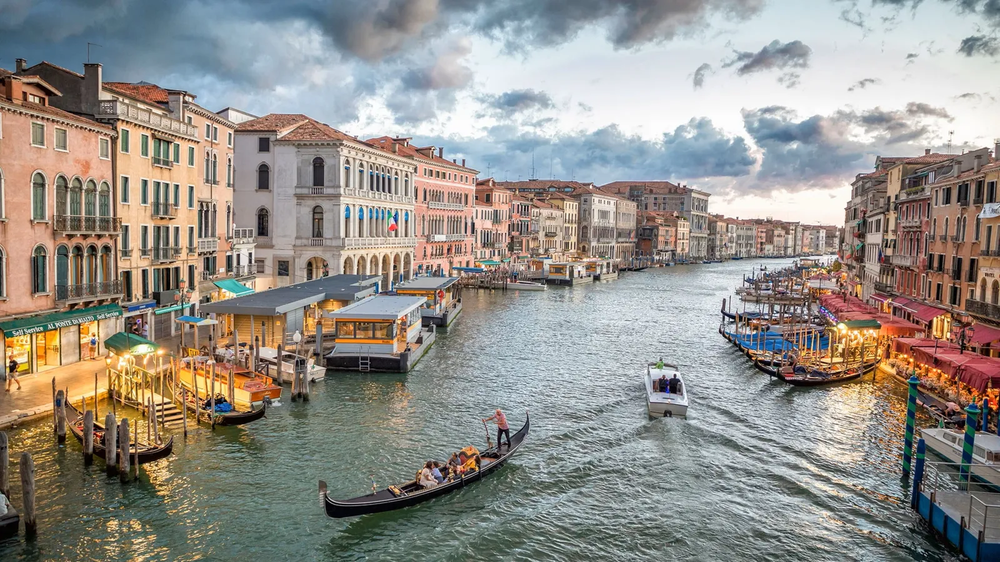
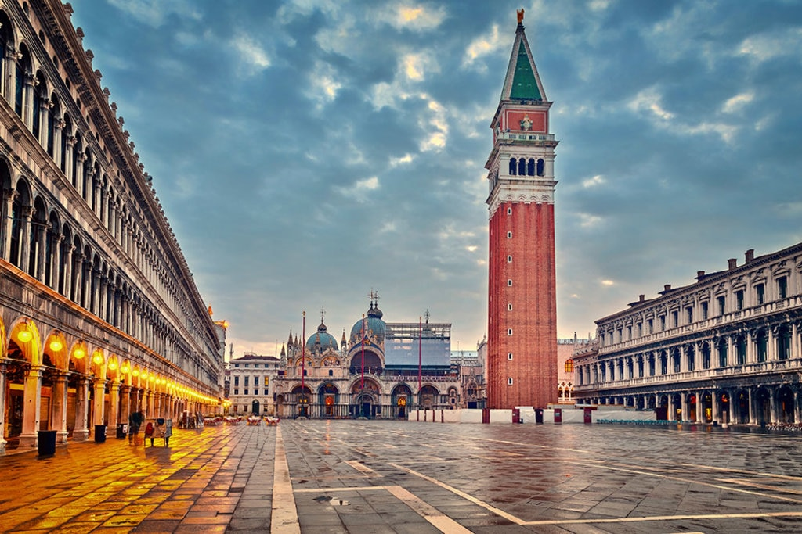
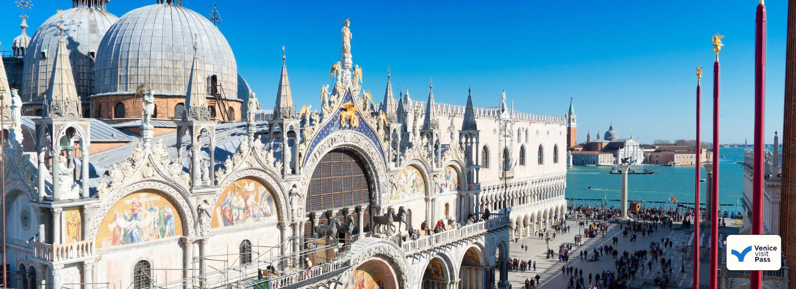
Et bien évidemment vous ne pouvez pas aller en Italie sans passer une journée à Rome, qui attire des millions de touristes chaque années!
Commencez votre matinée en visitant le Colisée, mangez votre petit encas à côté de la fontaine de Trévi (n’oubliez pas votre petite pièce pour faire un joli vœu !).
Passez votre après-midi au panthéon et dans la cité du Vatican où vous pouvez visiter la place Saint Pierre, la Basilique Saint Pierre et la Chapelle Sixtine ! Alors prévoyez de bonnes baskets de marche!
Allez vous rassasier dans le fameux restaurant Come’na Vorta. Et surtout n’oubliez pas de prendre un dessert !
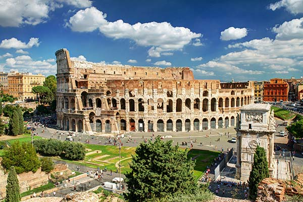


Nous espérons que ce circuit 100% Italien vous plaira et que vous passerez de bons moments seul ou accompagné (comme nous disons, vaut mieux être seul que mal accompagné ! ;) )